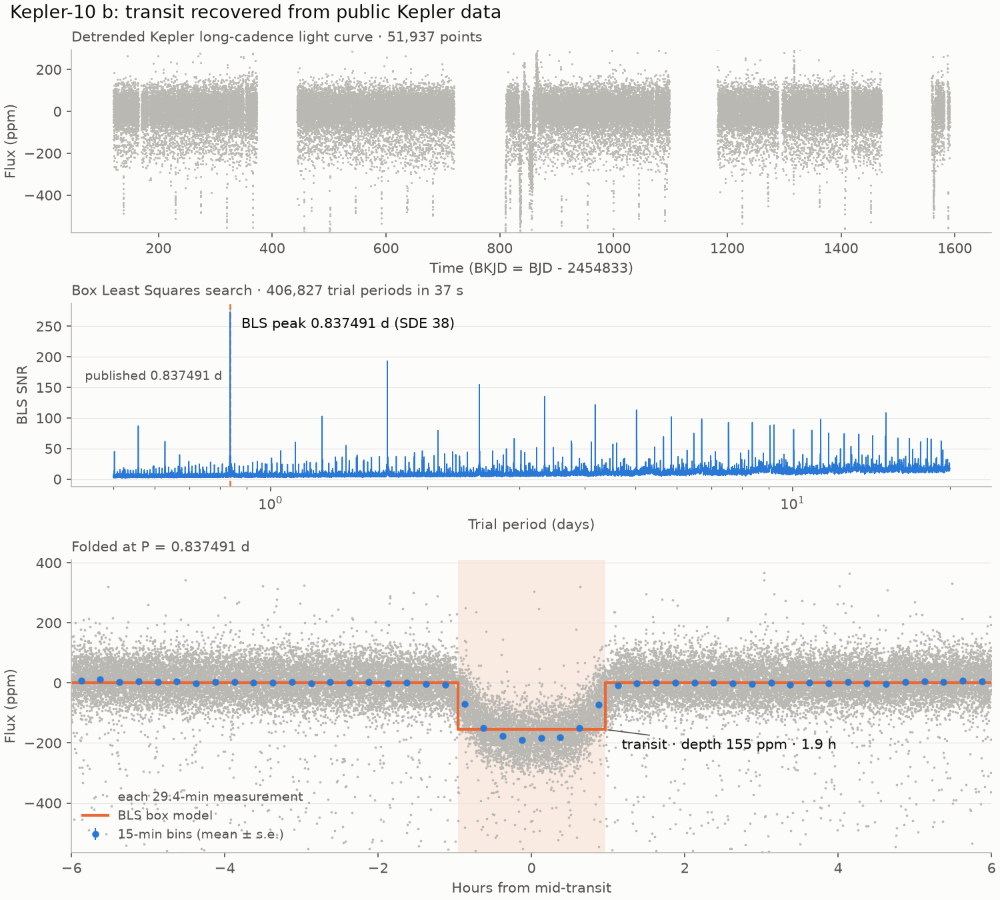

cazaplanetas: plan
Un modelo pequeño que busca planetas fuera del sistema solar en los datos públicos de los telescopios Kepler y TESS, y que demuestra con números que acierta como los modelos publicados gastando mucho menos.
1. Resumen
- Qué: un clasificador que mira una señal periódica en el brillo de una estrella y dice si parece un planeta o un falso positivo (estrella doble, ruido, contaminación de una estrella vecina).
- Con qué datos: Kepler (2009–2013), que está muy bien etiquetado y es el banco de pruebas estándar, y después TESS (2018–hoy), donde quedan más cosas por encontrar. Todo es público y gratuito en el archivo MAST de la NASA.
- Contra qué: la búsqueda clásica (BLS/TLS), el clasificador por reglas de la propia misión (Robovetter) y los modelos de redes neuronales publicados: Astronet (Google, 2018) y ExoMiner (NASA, 2022; ExoMiner++ para TESS, 2025).
- Qué queremos demostrar: que un modelo de bolsillo (50.000 parámetros como mucho) supera a ExoMiner en Kepler DR25, comparando igual con igual, y que se entrena en minutos en un portátil, con todo reproducible desde cero. El objetivo inicial de «al menos 50 veces menos parámetros» se abandonó tras el hito 4 (la definición de «superar» está en el hito 5).
- Primera versión publicable: repositorio con resultados en Kepler comparados de tú a tú, una prueba de concepto en TESS y un solo comando que lo reproduce todo. Son 7 hitos; los cuatro primeros ya están hechos.

2. Cómo se encuentra un planeta (en sencillo)
Cuando un planeta pasa por delante de su estrella, el brillo baja un poquito durante unas horas, y eso se repite cada órbita. Es el tránsito. Para un planeta como la Tierra la caída es de unas 80 partes por millón: como notar que una bombilla de 100 W pasa a 99,992 W.
La búsqueda (paso 3) es un problema resuelto y barato. Lo difícil es la criba (paso 4): por cada planeta real salen muchas señales falsas. Ahí es donde las redes neuronales han aportado, y donde un modelo pequeño puede demostrar algo. Por eso el proyecto se centra en la criba, y usa la búsqueda clásica como primera etapa y como referencia.
3. Datos: cuáles, cómo bajarlos y cuánto ocupan
| Fuente | Qué es | Cómo se baja | Tamaño | Uso |
|---|---|---|---|---|
| Kepler, curvas de cadencia larga (PDCSAP) | ~200.000 estrellas, 17 trimestres de ~90 días, una medida cada 29,4 min | lightkurve estrella a estrella; para miles, la copia pública de MAST en AWS (stpubdata), que aguanta 30 descargas en paralelo (el servidor HTTP de MAST corta a partir de ~16) | Medido: 5,9 MB por estrella (15 trimestres). Las 17.230 estrellas con señal DR25: 118 GB, 275.127 ficheros, 2 h 04 min (hito 3). Todo Kepler: ~3 TB | Entrenamiento y banco de pruebas principal |
| Vistas ya preparadas de Astronet | Curvas plegadas listas para entrenar, con la partición entrenamiento/validación/prueba del artículo | Enlace del repositorio de Astronet | Medido: 145 MB (10 TFRecord) | Reproducir Astronet sin bajar 100 GB (hito 2) |
| TESS, curvas SPOC de 2 min | Hasta ~20.000 estrellas por sector de 27 días; más de 90 sectores | lightkurve o guiones masivos por sector de MAST | ~1–2 MB por curva; ~18 GB por sector con productos auxiliares | Prueba en TESS y búsqueda de candidatos (hito 6) |
| TESS, imágenes completas (QLP, TESS-SPOC) | Millones de estrellas más débiles, cada 10 min o 200 s | MAST, productos de alto nivel (HLSP) | Decenas de TB en total | Fuera de la v1; es donde más candidatos nuevos quedan |
| K2 | Segunda vida de Kepler, campañas de ~80 días, datos más ruidosos | lightkurve (EVEREST, K2SFF) | Menor que Kepler | Opcional, después de la v1 |
| NASA Exoplanet Archive | Tablas de señales candidatas (TCE), objetos de interés (KOI, TOI) y planetas confirmados | API TAP o astroquery (el guion ya la usa) | Unos MB | Etiquetas y valores publicados |
Disco libre en la máquina de trabajo: ~100 GB. Guardar todas las curvas de las estrellas candidatas de Kepler lo llenaría. En el hito 3 se hizo mejor de lo planeado: cada curva se lee en memoria y se descarta en cuanto están sus vistas, así que ningún FITS llega al disco. El conjunto final ocupa 652 MB. Todo se guarda dentro de data/, que no entra en git.
4. Etiquetas: qué se sabe ya
Para entrenar y medir hacen falta señales cuya respuesta ya conocemos.
| Conjunto | Qué trae | Para qué |
|---|---|---|
| Kepler DR24, señales candidatas (TCE) | 20.367 señales; 15.737 con etiqueta: planeta candidato (3.600), falso positivo astrofísico (9.596) y no transitorio (2.541) | El banco de Astronet. Comparación directa con su artículo. |
| Kepler DR25, TCE + Robovetter | 34.032 señales y el veredicto del Robovetter. Incluye señales simuladas: tránsitos inyectados, curvas invertidas y barajadas | El banco de ExoMiner. Las simuladas sirven para medir cuántos planetas se escapan y cuántas falsas alarmas entran. |
| Catálogo KOI acumulado | Confirmado / candidato / falso positivo, actualizado con seguimiento posterior | Etiquetas más fiables que las de DR24. |
| Tabla de falsos positivos certificados de Kepler | Falsos positivos revisados a mano por el grupo de trabajo de Kepler | Negativos de alta calidad. |
| Catálogo TOI de TESS (ExoFOP) | Disposición del grupo de seguimiento TFOPWG: confirmado (CP), ya conocido (KP), candidato (PC), candidato ambiguo (APC), falso positivo (FP), falsa alarma (FA) | Etiquetas para TESS. Son más ruidosas: muchos PC nunca se han revisado del todo. |
Ojo con las trampas: la misma estrella no puede estar en entrenamiento y en prueba (se parte por estrella, no por señal), y no se deben usar como entrada columnas que ya contienen la respuesta (por ejemplo, las banderas del Robovetter).
5. Con qué nos comparamos
| Método | Tipo | Qué publica | Código |
|---|---|---|---|
| BLS (Kovács y otros, 2002) | Búsqueda clásica: ajusta una caja periódica | Referencia de detección; en astropy | astropy, BSD-3 |
| TLS (Hippke y Heller, 2019) | Búsqueda clásica con la forma real del tránsito | Detecta planetas pequeños mejor que BLS | MIT |
| Robovetter (Thompson y otros, 2018) | Reglas escritas a mano por el equipo de Kepler | Catálogo oficial DR25 | Público, en el archivo |
| Astronet (Shallue y Vanderburg, 2018) | Red convolucional sobre dos vistas plegadas | AUC 0,988 y exactitud 0,960 en su partición de prueba de DR24; descubrió Kepler-90 i y Kepler-80 g | Apache-2.0 |
| Exonet (Ansdell y otros, 2018) | Astronet + desplazamiento del centroide + datos de la estrella | Mejora a Astronet; ya probó una versión reducida (Exonet-XS) | Público |
| GPC / RFC (Armstrong y otros, 2021) | Proceso gaussiano y bosque aleatorio sobre rasgos | Validó 50 planetas de Kepler | Público |
| ExoMiner (Valizadegan y otros, 2022) | Red de varias ramas, una por cada prueba que haría un experto | Con precisión 0,99 recupera el 93,6 % de los planetas de prueba (el siguiente, GPC, el 76,3 %); validó 301 planetas nuevos | NOSA (licencia de la NASA) |
| ExoMiner++ (Valizadegan y otros, 2025) | ExoMiner con entrenamiento conjunto Kepler + TESS | Sobre 147.568 señales de TESS 2 min marca 7.330 como candidatas, 50 de ellas CTOI nuevas | NOSA |
| Astronet-Triage-v2 (Tey y otros, 2023) | Criba para imágenes completas de TESS | Área bajo la curva precisión–exhaustividad 0,965; recupera 3.577 de 4.140 TOI | Público + datos en Zenodo |
| WATSON-Net (2025) | Red reciente para Kepler y TESS | Reproduce la comparación con ExoMiner (AUC 0,995) | Ver artículo |
Cómo se compara de forma justa:
- Calidad: usamos exactamente la misma partición y las mismas etiquetas que cada artículo (la partición de Astronet en DR24; la validación cruzada por estrella de ExoMiner en DR25) y damos sus números publicados al lado de los nuestros, con su intervalo de confianza. La partición de Astronet es por señal y deja estrellas repetidas entre entrenamiento y prueba, así que desde el hito 3 damos también, y como cifra principal, la partición por estrella.
- Coste: los números de coste de los artículos no son comparables (otras máquinas). Por eso reentrenamos Astronet nosotros, en la misma máquina y con los mismos datos, y medimos las dos cosas igual. ExoMiner se compara por número de parámetros y por sus resultados publicados; su código tiene licencia NOSA, así que no se copia, solo se lee y se ejecuta para contar.
6. Qué se mide
Calidad (lo que usa la comunidad)
| Métrica | En palabras | Quién la usa |
|---|---|---|
| AUC ROC | Probabilidad de que un planeta real reciba más nota que un falso positivo | Astronet, Exonet, WATSON-Net |
| Área bajo precisión–exhaustividad (AUC-PR) | Como la anterior pero castiga más fallar con la clase rara (planetas) | ExoMiner, Astronet-Triage-v2 |
| Exhaustividad con precisión 0,99 (R@P0.99) | Qué parte de los planetas recuperas si exiges que el 99 % de lo que marcas sea planeta | ExoMiner (la métrica que más importa para validar) |
| Precisión y exhaustividad con el umbral elegido en validación | De lo marcado, cuánto acierta; de lo real, cuánto encuentra. El umbral se elige con la validación (mejor F1), nunca con la prueba; con 0,5 se da como referencia (desde el hito 3) | Todos (casi siempre con 0,5) |
| Completitud y fiabilidad con señales simuladas | Cuántos tránsitos inyectados recupera y cuántas curvas invertidas o barajadas se cuelan | Robovetter / DR25 |
| Recuperación de TOI conocidos | En TESS: qué parte de los planetas confirmados (CP, KP) marca como candidatos | ExoMiner++, Astronet-Triage-v2 |
Coste (lo que queremos ganar)
- Parámetros del modelo y tamaño del fichero de pesos.
- Operaciones por señal (FLOPs) en la predicción.
- Tiempo de entrenamiento en un Mac con M3 Max, de principio a fin, y tiempo por señal al predecir.
- Memoria máxima y disco necesarios para reproducirlo.
- Energía estimada (tiempo × consumo típico del chip; sin herramientas que pidan permisos de administrador).
Qué contará como éxito (cambiado tras el hito 4): superar a ExoMiner en Kepler DR25. «Superar» es que nuestra media sea igual o mayor que la suya en las dos medidas (AUC-PR y R@P0.99), con menos parámetros y comparando igual con igual: un modelo con un modelo y un conjunto con un conjunto. Escalón intermedio: R@P0.99 de 0,909 o más. Tope de bolsillo: 50.000 parámetros por modelo. Nada se elige mirando las particiones de prueba, y se declara cuántas configuraciones se probaron. El criterio anterior (calidad dentro del intervalo de ExoMiner con ≥ 50 veces menos parámetros) se abandona: el hito 4 midió 6,6 veces menos. Si no se llega, se publica igual con la curva calidad–coste: también es un resultado.
7. El modelo pequeño
Idea: lo que un astrónomo mira para cribar se puede resumir en unas pocas vistas de la curva plegada. Si se le dan bien preparadas, no hace falta una red grande. Astronet usa 9.940.193 parámetros (contados en el hito 2), el 85 % en su primera capa densa.
Entradas (por cada señal)
- Vista global: la órbita entera plegada, en 2.001 tramos (como Astronet).
- Vista local: el tránsito ampliado, en 201 tramos.
- Tránsitos pares e impares por separado: si son distintos, suele ser una estrella doble.
- Eclipse secundario: la vista local en la fase 0,5; un planeta casi no se ve ahí, una estrella doble sí.
- Desplazamiento del centroide: si la luz que baja viene de una estrella vecina, el centro de luz se mueve.
- Unos pocos números: periodo, duración, profundidad, relación señal/ruido y radio y gravedad de la estrella.
Arquitectura propuesta: «Astronet de bolsillo»
- Una rama convolucional 1D por vista, con convoluciones separables (filtran cada canal por separado y luego mezclan: mucho más baratas) de 8 → 16 → 32 canales.
- Promedio global al final de cada rama en lugar de capas densas enormes: aquí está casi todo el ahorro.
- Se juntan las ramas con los números escalares y una capa de 32 neuronas da la probabilidad de planeta.
- Tamaño objetivo: 20.000–80.000 parámetros (100–500 veces menos que Astronet; pesos de menos de 0,5 MB). Un conjunto de 5 sigue por debajo de 0,5 millones. Desde el hito 5, el tope es de 50.000 parámetros por modelo.
- Referencia aún más barata: un modelo de árboles (gradient boosting) sobre rasgos calculados a mano. Si la red pequeña no le gana, la red sobra, y eso también se publicará.
Entrenamiento
- PyTorch con el backend MPS (la GPU de Apple). Es lo que cualquiera puede reproducir también en CUDA o CPU. MLX se probará como experimento aparte para medir velocidad, no como base. Con modelos tan pequeños puede que la CPU vaya igual de rápido; se medirán las dos.
- Pérdida de entropía cruzada con pesos por clase, AdamW, parada temprana con la validación.
- Aumentos de datos: invertir el tiempo (como Astronet), desplazar un poco la fase, añadir ruido.
- Todo con semilla fija y versión de datos registrada (un manifiesto con sumas de comprobación).
8. Cuánto ocupa y cuánto tarda en un Mac con M3 Max (36 GB)
| Paso | Estimación | De dónde sale |
|---|---|---|
| Bajar y procesar una estrella de Kepler | ~25–50 s, 5,9 MB | Medido con Kepler-10 vía lightkurve (15 ficheros, uno detrás de otro) |
| Búsqueda BLS completa (0,5–20 d, 407.000 periodos) | 33 s por estrella | Medido, un solo núcleo |
| Bajar las 17.230 estrellas con señal DR25 y construir todas sus vistas | 2 h 04 min; 118 GB leídos, 652 MB guardados | Medido en el hito 3: 10 procesos × 3 descargas desde la copia de MAST en AWS (16 MB/s de media, el límite fue la conexión). Las vistas se calculan a la vez que se baja; el spline elegido por BIC cuesta ~1–2 s por estrella |
| Entrenar el modelo pequeño | 57 s (20 épocas, DR24) | Medido en el hito 2 con 12.589 señales en MPS; con las ~30.000 de DR25 serán unos 2–3 min |
| Validación cruzada (10 particiones × 10 semillas) | 1–3 h | Estimado a partir de lo anterior |
| Reentrenar Astronet como referencia de coste | 197 s por modelo | Medido en el hito 2: 9,9 M parámetros, 50 épocas, MPS |
| Predecir con el modelo pequeño | 42 µs por señal (MPS); 1,6 ms (CPU, 1 hilo) | Medido en el hito 2: 9 millones de multiplicaciones-sumas por señal |
| Un sector de TESS (2 min): bajar + BLS + criba | ~18 GB; 3–6 h | Estimado: hasta 20.000 curvas; BLS es mucho más rápido con 27 días de datos |
Conclusión: lo caro no es entrenar sino bajar y preparar datos. Por eso el plan empieza con datos ya preparados (hito 2) y deja la descarga masiva para cuando ya sabemos que el modelo funciona.
9. Hitos hasta la primera versión publicable
Hito 1 · Esqueleto que baja una curva y encuentra un planeta conocido Hecho Dificultad baja
Repositorio con git, entorno reproducible con uv (versiones fijadas en uv.lock y requirements.txt), datos fuera de git y un guion que baja Kepler-10, lo limpia, busca con BLS y dibuja el tránsito.
Criterio comprobableuv run pytest pasa: el periodo recuperado de Kepler-10 b coincide con el publicado (0,8374907 d) con error relativo < 10⁻⁴ (sale 5·10⁻⁷), y BLS recupera un tránsito sintético inyectado. La imagen está en docs/.
Hito 2 · Reproducir Astronet y primer modelo pequeño con datos ya preparados Hecho Dificultad media
Con las vistas ya preparadas de Astronet (145 MB): reimplementar Astronet en PyTorch, entrenarlo en la misma máquina y medir su coste; entrenar el modelo pequeño (solo vistas global y local) con la misma partición.
Criterio comprobableAstronet reimplementado da AUC ≥ 0,983 en la partición de prueba (artículo: 0,988). El modelo pequeño da AUC ≥ 0,975 con ≤ 1/50 de los parámetros. Tabla con parámetros, tiempo de entrenamiento y tiempo por señal de los dos, media y desviación de 5 semillas, generada por un solo comando.
Resultado (uv run python scripts/hito2_astronet.py, unos 22 min; tabla completa y explicación en hito2.md). Partición de prueba de Astronet: 1.574 señales, 360 planetas; media ± desviación de 5 semillas; precisión y recall con umbral 0,5.
| Modelo | AUC | Precisión | Recall | Parámetros | Entrenamiento | Inferencia por curva |
|---|---|---|---|---|---|---|
| Astronet reentrenado | 0,9883 ± 0,0007 | 0,892 ± 0,018 | 0,947 ± 0,034 | 9.940.193 | 197 ± 5 s | 70 µs (MPS) · 2,0 ms (CPU) |
| Astronet de bolsillo | 0,9858 ± 0,0009 | 0,895 ± 0,012 | 0,902 ± 0,021 | 36.161 | 57 ± 3 s | 42 µs (MPS) · 1,6 ms (CPU) |
| Astronet publicado (artículo, media de 10) | 0,988 | — | — | — | 90 min (CPU) | — |
Los dos criterios se cumplen: 0,9883 ≥ 0,983 y 0,9858 ≥ 0,975 con 275 veces menos parámetros. El modelo pequeño iguala la precisión pero recupera menos planetas con el umbral 0,5. Hallazgo para los hitos 3 y 4: la partición de Astronet es por señal, y el 56 % de las señales de prueba están en estrellas que también salen en entrenamiento; con solo las estrellas nuevas el AUC baja a ~0,968 en los dos modelos. (Corregido en el hito 3: ese subconjunto no es representativo. Con una partición por estrella de verdad, el AUC es 0,983.)
Hito 3 · Nuestro propio conjunto de datos de Kepler DR25 Hecho Dificultad media-alta
Descarga por tandas de las estrellas con señales DR25 y cálculo de todas las vistas (incluidas pares/impares, secundario y centroide) sin llenar el disco. El proceso se puede interrumpir y retomar. Añadido tras el hito 2: partición por estrella y umbral elegido en validación, para el modelo de bolsillo y para Astronet en las mismas condiciones.
Criterio comprobableAl menos el 98 % de las 34.032 señales DR25 procesadas, con la lista de fallos y su motivo. Para 100 señales al azar que también están en Astronet, la vista global nuestra, calculada con sus mismas efemérides y su receta, tiene con la suya una correlación mediana ≥ 0,95; y, entrenando con las mismas señales y la misma partición, nuestras vistas dan el mismo AUC que las suyas (dentro de 0,005). El conjunto final ocupa ≤ 2 GB y lleva un manifiesto con sumas de comprobación. Ajustado en el hito 3: antes pedía correlación ≥ 0,95 con las efemérides de DR25. Eso no lo cumplen ni dos vistas correctas, porque la mayoría de las vistas globales son ruido, y un periodo que difiere en 6 partes por millón reparte ese ruido en otros tramos.
Resultado (scripts/hito3_dr25.py y scripts/hito3_star_split.py; detalles en hito3.md):
- 34.032 de 34.032 señales (100 %), en 17.230 estrellas, y 0 fallos tras una segunda pasada. En la primera fallaron 24 señales sin tránsitos impares o pares con datos; ahora esas vistas se guardan vacías y quedan anotadas. 118 GB de curvas leídos en memoria en 2 h 04 min, sin escribir ningún FITS. El conjunto ocupa 652 MB, con manifiesto SHA-256. El disco libre medido nunca bajó de 73 GB.
- Correlación con las vistas globales de Astronet (100 señales, mismas efemérides y receta): mediana 0,968, media 0,961 (la vista local, 0,993). Entrenando con nuestras vistas o con las suyas (9.297 señales, misma partición por estrella): AUC 0,9748 frente a 0,9756 (Astronet) y 0,9717 frente a 0,9725 (bolsillo).
Partición por estrella con las 15.737 señales de Astronet (80/10/10; prueba: 1.575 señales, 372 planetas; 5 semillas). Umbral elegido en validación (mejor F1):
| Modelo | AUC | AUC con la partición de Astronet (hito 2) | Planetas perdidos (umbral 0,5 → validación) | Falsas alarmas (0,5 → validación) | Parámetros |
|---|---|---|---|---|---|
| Astronet reentrenado | 0,9829 ± 0,0007 | 0,9883 ± 0,0007 | 34,2 → 29,4 | 37,4 → 41,6 | 9.940.193 |
| Astronet de bolsillo | 0,9818 ± 0,0008 | 0,9858 ± 0,0009 | 41,4 → 28,6 | 40,8 → 54,8 | 36.161 |
Al partir por estrella, el AUC baja unas 0,005 en los dos modelos. Son los mismos modelos y recetas: lo que desaparece es la ventaja de reconocer estrellas ya vistas, sobre todo binarias con dos señales. La distancia entre los dos modelos baja a 0,0011. Con el umbral de validación, el modelo pequeño pierde lo mismo que Astronet (28,6 frente a 29,4 planetas de 372), a cambio de 14 falsas alarmas más. Los tiempos de entrenamiento de este hito se midieron con otros trabajos en el mismo ordenador; para costes valen los del hito 2.
Hito 4 · El modelo pequeño frente a ExoMiner Hecho Dificultad alta
Modelo completo (todas las vistas + números) evaluado con el mismo protocolo de ExoMiner: validación cruzada por estrella en DR25 (splits.star_folds, ya hecho en el hito 3). Falta añadir al conjunto las etiquetas DR25 (KOI acumulado, falsos positivos certificados, Robovetter) y los escalares, con una lista explícita de columnas permitidas. Comparación con el modelo de árboles, con Astronet reentrenado y con las cifras publicadas de ExoMiner y Robovetter. Medición de completitud y fiabilidad con las señales simuladas.
Criterio comprobableTabla con AUC-PR y R@P0.99 (media e intervalo del 95 % sobre 10 particiones × 10 semillas). Éxito si R@P0.99 queda dentro del intervalo publicado de ExoMiner (93,6 %) o por encima, con ≥ 50 veces menos parámetros y < 10 min de entrenamiento. Si no, se publica la curva calidad–coste y la distancia exacta.
Resultado (scripts/hito4_dr25_cv.py; detalles en hito4.md): el criterio no se cumple, y se publican la curva calidad–coste y las distancias. Etiquetas con las reglas de ExoMiner y las tablas de hoy: 31.045 señales con etiqueta (2.724 planetas, frente a sus 2.291: los confirmados desde 2020) y una lista de 32 columnas permitidas, con una prueba automática que falla si entra una columna que delata la respuesta (tce_nkoi, av_*, procedencia de los datos de la estrella...). Validación cruzada por estrella en 10 particiones; umbral elegido en validación.
| Modelo | AUC-PR | R@P0.99 | Parámetros | Entrenamiento |
|---|---|---|---|---|
| Modelo de bolsillo completo (7 vistas + 32 columnas; 10 × 10) | 0,989 ± 0,003 | 0,822 ± 0,059 | 38.441 | 6,1 min de media, 9,5 máx. |
| El mismo, media de 10 semillas | 0,992 ± 0,003 | 0,870 ± 0,058 | 384.410 | — |
| Árboles con las 32 columnas (10 × 10) | 0,984 ± 0,005 | 0,592 ± 0,187 | 9.638 nodos | 10 s |
| Astronet reentrenado (3 × 10) | 0,957 ± 0,008 | 0,235 ± 0,112 | 9.940.193 | 13,6 min de media |
| Robovetter (salida publicada) | 0,962 ± 0,008 | 0,000 | — | — |
| ExoMiner (publicado; intervalo del 99 %) | 0,995 ± 0,002 | 0,939 ± 0,030 | ≈ 252.647 (contados a mano) | — |
Distancia con ExoMiner: 0,117 en R@P0.99 con un modelo (0,069 con la media de 10) y 0,006 en AUC-PR. Parámetros: 6,6 veces menos que ExoMiner, no 50 (259 frente a Astronet). Entrenamiento: menos de 10 minutos, sí. El modelo pequeño gana con claridad a Astronet, a los árboles y al Robovetter, pero no llega a ExoMiner ni con 10 copias, que ya suman más parámetros que él. Lo que más pesa es lo que recibe: con solo las vistas global y local, el mismo modelo se queda en 0,301. Antes de cambiar el modelo hay que separar cuánto aportan las vistas nuevas y cuánto las columnas. La medida con señales simuladas pasa al hito 6 (pide volver a leer las curvas).
Hito 5 · Superar a ExoMiner en Kepler DR25 Hecho Dificultad alta
El hito 4 dejó el modelo de bolsillo en 0,822 de R@P0.99 frente al 0,939 publicado de ExoMiner. Este hito cierra esa distancia sin salirse del bolsillo.
Qué es «superar». Nuestra media igual o mayor que la suya en las dos medidas (AUC-PR y R@P0.99), con menos parámetros y comparando igual con igual: un modelo con un modelo, y un conjunto con un conjunto.
- Escalón intermedio: R@P0.99 de 0,909 o más.
- Tope de bolsillo: 50.000 parámetros por modelo. El «50 veces menos» del plan original se abandona.
- Sin trampas: nada se elige mirando las particiones de prueba (toda elección, con la validación de cada partición) y cada paso declara cuántas configuraciones probó.
- Las dos cuentas de R@P0.99, siempre: la exacta (precisión ≥ 0,99) y la que reproduce las cifras de ExoMiner (precisión redondeada a dos decimales, es decir, ≥ 0,985). A ExoMiner se le mide con nuestro código y con las puntuaciones por señal que publica. Sus cifras son de un conjunto de 10 modelos por partición (unos 2,5 millones de parámetros).
Paso 1 · Diagnóstico Hecho
Por qué nos quedamos en 0,822, sin descargar curvas: paridad de protocolo con el artículo y el código de ExoMiner, comparación directa con sus puntuaciones publicadas, análisis de errores, ablación de entradas e hipótesis ordenadas.
Criterio comprobableDocumento con la tabla de paridad (cada dato con su cita), la cifra de ExoMiner medida con nuestras etiquetas, la lista de negativos que rompen la precisión 0,99 y de planetas perdidos por causa, cuántos hay que arreglar para llegar a 0,939, la tabla de ablación y las hipótesis ordenadas.
Resultado (scripts/hito5_diagnostico.py; detalles en hito5_diagnostico.md). La distancia de 0,117 es sobre todo de cómo se compara:
| Media de las 10 particiones | R@P0.99 exacto | R@P0.99 como lo mide ExoMiner | AUC-PR |
|---|---|---|---|
| Bolsillo, un modelo (38.441 parámetros) | 0,822 | 0,884 | 0,989 |
| Bolsillo, media de 10 (384.410) | 0,870 | 0,918 | 0,992 |
| ExoMiner, media de 10 (≈ 2,5 millones), sus etiquetas y particiones | 0,920 | 0,939 | 0,995 |
| ExoMiner, media de 10, nuestras etiquetas y particiones | 0,932 | 0,950 | 0,995 |
- Causa 1: su cifra es de un conjunto de 10 modelos y la nuestra de uno (0,822 → 0,870).
- Causa 2: su «precisión 0,99» es en la práctica ≥ 0,985: con sus puntuaciones publicadas, la cuenta exacta le da 0,920, y el 0,939 ± 0,030 sale al milésimo redondeando la precisión a dos decimales (0,870 → 0,918 con la misma cuenta).
- Causa 3: de los 42 negativos que nos rompen la precisión, 15 son el eclipse secundario de una binaria detectado como señal aparte en la misma estrella. ExoMiner lo corrige en los datos antes de entrenar y les da 0,00.
- Para llegar a 0,939 con la cuenta exacta hay que arreglar 17 objetos de 31.045 (10 para 0,909). La semilla mueve el resultado más que la partición. No hace falta releer las curvas para el paso 2.
- Medido sin entrenar (regla del secundario + semilla elegida con la validación): un modelo de 38.441 parámetros, 0,894 exacto · 0,920 con su cuenta · 0,9917 de AUC-PR; el conjunto de 10, 0,902 · 0,947 · 0,9931, frente a 0,932 · 0,950 · 0,9954 de ExoMiner con nuestras etiquetas. Lo que queda es sobre todo AUC-PR, en unos 25 planetas mal puntuados (estrellas saturadas, sobre todo): de ahí el orden del paso 2.
- Ablación (10 grupos × 10 particiones × 3 semillas, 300 modelos): lo que más pesa es la prueba de centroide (−0,129 de R@P0.99 exacto, −0,0066 de AUC-PR), la vista global (−0,135) y los escalares del ajuste del tránsito (−0,058); impares/pares, vista local y otros diagnósticos DV no aportan nada medible al reentrenar, así que de ahí se pueden sacar parámetros para las entradas nuevas.
Paso 2 · Mejoras de receta sin datos nuevos Hecho
Con el conjunto del hito 3 y las tablas públicas, por este orden: (1) emparejar el secundario entre las señales de una misma estrella (escalares de la señal hermana y vista del secundario en su fase, reconstruida de la vista global guardada); (2) estabilizar el modelo único: elegir entre semillas con la validación, promediar pesos, destilar el conjunto de 10 en un modelo; (3) para el AUC-PR, la magnitud Kepler (estrellas saturadas) y una vista plegada a P/2 sacada de la vista global; (4) la coincidencia de efemérides con otras estrellas; (5) después, si falta: pérdida, aumentos y búsqueda de hiperparámetros con validación interna.
Criterio comprobableTabla con las dos cuentas de R@P0.99 y AUC-PR (10 particiones × 10 semillas) para cada cambio, uno a uno y juntos, con el número de configuraciones probadas. Éxito del paso: el conjunto de 10 llega al escalón de 0,909 con la cuenta exacta, y un solo modelo de ≤ 50.000 parámetros iguala al conjunto de 10 de hoy (0,870).
Resultado (scripts/hito5_receta.py; detalles en hito5_receta.md). El criterio se cumple. Cada cambio con 10 particiones × 5 semillas (no 10: bastan 5 o más, y con otros trabajos en el mismo ordenador cada modelo tarda unos 100–400 s); la receta final y la del último peldaño, con 10 semillas. Todo elegido con la validación de cada partición; 22 recetas, 452 modelos.
| Media de las 10 particiones | Parámetros | R@P0.99 exacto | R@P0.99 como lo mide ExoMiner | AUC-PR |
|---|---|---|---|---|
| ExoMiner, media de 10, nuestras etiquetas y particiones | ≈ 2,5 millones | 0,932 | 0,950 | 0,9954 |
| Antes: un modelo (hito 4) | 38.441 | 0,822 | 0,884 | 0,9894 |
| Antes: media de 10 | 384.410 | 0,870 | 0,918 | 0,9922 |
| Después: un modelo | 25.745 | 0,920 | 0,957 | 0,9935 |
| Después: media de 10 | 257.450 | 0,956 | 0,969 | 0,9961 |
- La señal hermana (la otra señal de la misma estrella con el mismo periodo, como entrada) es casi todo: un modelo pasa de 0,807 a 0,913 de R@P0.99 exacto y de 0,9892 a 0,9927 de AUC-PR. La coincidencia de efemérides suma poco (+0,016 · +0,014 · +0,0006); la magnitud Kepler y la vista a P/2, nada medible.
- Búsqueda (17 cambios, un cambio cada vez, solo validación): pesos por clase, pérdida focal, desplazamiento de fase, media móvil de pesos, lote de 128 y la normalización de ExoMiner empeoran o no cambian nada; 8 cambios pequeños (ramas por prueba, sin vistas de impares/pares ni local, 30 épocas, ruido, suavizado de etiquetas…) juntos dejan el modelo en 25.745 parámetros y suben sobre todo el conjunto. La destilación del conjunto en un modelo da 0,935 · 0,954 · 0,9939, mejor en prueba, pero peor en validación que la combinación, así que no se elige.
- Distancia a ExoMiner, partición a partición: conjunto contra conjunto, +0,024 ± 0,020 exacto, +0,019 ± 0,019 con su cuenta y +0,0007 ± 0,0019 de AUC-PR (empate dentro del ruido). Un modelo contra su conjunto: −0,012 · +0,007 · −0,0019. Lo que falta en un modelo sigue en los planetas de estrellas saturadas y en los de periodo detectado al doble.
Paso 3 · Entradas que falten No hecho
Se pasó al veredicto sin este paso (decisión del 22/11): con la receta del paso 2 el conjunto ya iba por delante. Queda como el camino para que un modelo suelto pase también en AUC-PR (ver el paso 4). Primero las que no piden curvas: coincidencia de efemérides con otras estrellas calculada con la tabla de señales, magnitud Kepler, tránsitos impares y pares con datos, masa y densidad de la estrella. Cada columna nueva entra por la lista de permitidas y su prueba automática. Releer las curvas (118 GB, por tandas y sin guardarlas) solo si después de esto no se llega; la lista de lo que habría que sacar en una sola pasada está en el diagnóstico (centroide por componentes, dispersión por tramo, profundidad por tránsito, vistas con los demás tránsitos enmascarados, plegados a P/2 y 2P, datos de cabecera).
Criterio comprobableLa misma tabla del paso 2 con cada entrada nueva, y la prueba de fugas ampliada en verde. Si se releen las curvas: 100 % de las señales procesadas otra vez, con manifiesto nuevo y sin tocar las vistas anteriores.
Paso 4 · Modelo final y veredicto Hecho
Una sola configuración, fijada antes de medir, entrenada con 10 particiones × 10 semillas. Veredicto con la definición de arriba, para un modelo y para el conjunto de 10, con las dos cuentas de R@P0.99 y con ExoMiner medido con el mismo código. Se repite con otro reparto de particiones, que no se ha mirado en ningún paso anterior.
Criterio comprobable«Supera» si la media de R@P0.99 y la de AUC-PR son iguales o mayores que las de ExoMiner (0,939 y 0,995 publicados; 0,920 con la cuenta exacta) con ≤ 50.000 parámetros por modelo: conjunto de 10 contra su conjunto de 10 y, aparte, un solo modelo contra su conjunto. Si no, se publican las distancias y la curva calidad–coste.
Resultado (scripts/hito5_veredicto.py; detalles en hito5_veredicto.md). Receta, reparto y regla cerrados en un commit antes de entrenar: la «combinación» del paso 2 (25.745 parámetros), un reparto de estrellas en 10 particiones que no se había usado nunca, 10 semillas, el conjunto de 10 y su destilado en un modelo. El conjunto de 10 supera a ExoMiner; un modelo suelto y el destilado, no (pasan en R@P0.99 y se quedan cortos en AUC-PR).
| Media de las 10 particiones nuevas | Parámetros | R@P0.99 exacto | R@P0.99 como lo mide ExoMiner | AUC-PR |
|---|---|---|---|---|
| ExoMiner, conjunto de 10, publicado (sus etiquetas y particiones) | ≈ 2,5 millones | 0,920 | 0,939 | 0,995 |
| ExoMiner, sus puntuaciones en nuestras particiones nuevas | ≈ 2,5 millones | 0,926 | 0,950 | 0,9952 |
| Un modelo (media de 10 semillas) | 25.745 | 0,927 | 0,953 | 0,9934 |
| Destilado del conjunto en un modelo (media de 10 semillas) | 25.745 | 0,936 | 0,958 | 0,9938 |
| Conjunto de 10 | 257.450 | 0,950 | 0,963 | 0,9962 |
- Conjunto contra conjunto: supera en las tres medias, contra lo publicado (+0,030 · +0,024 · +0,0012) y contra sus puntuaciones en las mismas particiones (+0,023 ± 0,029 · +0,013 ± 0,039 · +0,0010 ± 0,0018; por delante en 7, 8 y 7 de las 10), con unas 10 veces menos parámetros. La ventaja en AUC-PR sigue dentro del ruido.
- Un modelo contra su conjunto: no supera. En R@P0.99 iguala (+0,007 y +0,014 frente a lo publicado; +0,001 y +0,003 en la directa), pero el AUC-PR se queda en 0,9934: −0,0016 frente al 0,995 publicado y −0,0018 ± 0,0017 en la directa (por delante en 2 de 10). El destilado del conjunto mejora algo (0,936 · 0,958 · 0,9938) pero tampoco llega en AUC-PR (−0,0012 frente al publicado, −0,0013 ± 0,0017 en la directa).
- Con el reparto nuevo las cifras casi no se mueven respecto al paso 2 (un modelo 0,920 · 0,957 · 0,9935; conjunto 0,956 · 0,969 · 0,9961): la ventaja del conjunto no dependía de cómo se agruparon las estrellas al elegir la receta.
Paso 5 · Revisión independiente Hecho
Alguien que no ha hecho el trabajo repite el veredicto desde un clon limpio y busca fugas: columnas que delatan la respuesta, estrellas repetidas entre particiones, elecciones hechas mirando la prueba y diferencias con el protocolo de ExoMiner.
Criterio comprobableInforme de la revisión con lo que se ha vuelto a ejecutar, las cifras que salen y la lista de pegas, cerradas o aceptadas una a una.
Se hizo antes de publicar el repositorio y sus correcciones, de redacción, están incorporadas a los textos; el informe de la revisión no se publica.
Hito 6 · Señales simuladas de DR25 y de principio a fin en TESS Dificultad alta
Primero, lo que quedó pendiente del hito 4: completitud y fiabilidad con las señales simuladas de DR25 (tránsitos inyectados, curvas invertidas y barajadas), que piden volver a leer las curvas de Kepler para construir sus vistas. Después, limpieza + búsqueda (BLS y TLS) + criba con el modelo pequeño sobre 2–3 sectores de TESS de 2 min, ajustando el modelo con las etiquetas TOI. Prueba de inyección: meter tránsitos falsos en curvas reales y ver cuántos encuentra todo el sistema.
Criterio comprobableEn esos sectores, el sistema marca como candidatos al menos el 90 % de los TOI confirmados o ya conocidos (CP/KP) con señal/ruido > 10, y en las inyecciones recupera ≥ 80 % de los tránsitos con señal/ruido > 10. Comparación del acuerdo con ExoMiner++ en las mismas señales. Lista aparte de señales marcadas que no son TOI ni CTOI, sin llamarlas descubrimientos.
Hito 7 · Versión 0.1 publicable Dificultad media
README con la tabla de resultados y la gráfica calidad–coste, ficha del modelo (para qué sirve y para qué no), pesos publicados (< 1 MB), citas y licencias, pruebas automáticas que no necesitan internet y una página corta que lo explique para no especialistas.
Criterio comprobableDesde un clon limpio en una carpeta nueva: uv sync y un solo comando reproducen la tabla del hito 5 dentro de ±0,005 en AUC-PR usando el conjunto preparado. Las pruebas sin red pasan. git log y los ficheros no contienen rutas locales, correos ni claves. Subirlo a GitHub queda a decisión del autor del proyecto.
10. Si sale un candidato nuevo de verdad
No se promete. Kepler está muy exprimido: lo nuevo, si aparece, saldrá casi seguro de TESS. Para que una señal llegue a proponerse como CTOI (candidato de la comunidad) en ExoFOP haría falta, como mínimo:
- Que no esté ya en las listas de TOI, CTOI ni en el Exoplanet Archive.
- Que se repita: al menos dos o tres tránsitos, mejor en varios sectores, con forma y profundidad coherentes.
- Pasar las pruebas de impostor a mano: pares e impares iguales, sin eclipse secundario, centroide que no se mueve, ninguna estrella vecina brillante en el mismo píxel de TESS (los píxeles son de 21″; se comprueba con Gaia).
- Tamaño creíble: con el radio de la estrella, el radio del planeta debe ser de planeta, no de estrella.
- Probabilidad de falso positivo calculada con una herramienta estándar (por ejemplo TRICERATOPS) y revisión de los informes de validación de la misión si existen.
- Revisión por alguien con experiencia: lo ideal es contactar con un astrónomo o con el grupo de seguimiento (TFOP) antes de enviar.
- Cuenta en ExoFOP (gratuita, pero personal: la tiene que crear el autor del proyecto a su nombre) y envío del CTOI con periodo, época, duración, profundidad y notas. Luego la comunidad decide si merece seguimiento con otros telescopios.
11. Riesgos
| Riesgo | Qué puede pasar | Qué hacemos |
|---|---|---|
| Disco | 110 GB libres; los datos de Kepler los llenarían | Descarga por tandas, guardar solo vistas compactas, borrar FITS; o disco externo |
| Comparación injusta | Particiones o etiquetas distintas hacen que los números no se puedan comparar | Usar la partición de cada artículo; reentrenar Astronet aquí; poner siempre la fuente de cada cifra |
| Fugas de información | Misma estrella en entrenamiento y prueba, o columnas que ya dicen la respuesta | Partir por estrella (hecho en el hito 3, con prueba automática); lista explícita de entradas permitidas, con prueba automática (hecho en el hito 4) |
| Etiquetas ruidosas | Sobre todo en TESS: muchos «candidatos» no se han revisado | Medir en TESS solo con CP/KP/FP firmes; entrenar con Kepler + TESS |
| «Menos coste» engañoso | Ganar en parámetros pero perder en preparación de datos | Medir el coste de todo el proceso, no solo del modelo |
| Descargas lentas o cortadas en MAST | Errores, límites, días de descarga | Reintentos, reanudación, caché local; empezar con datos ya preparados |
| Problemas con MPS | Operaciones no soportadas o resultados distintos a CPU | Probar también en CPU; prueba que compara las dos |
| Prometer de más | Llamar «descubrimiento» a un falso positivo | Lenguaje prudente; pasos de la sección 10 antes de nada |
| Licencias | Copiar código NOSA (ExoMiner) en un repo MIT | No copiar; reimplementar desde el artículo y citar |
12. Fuentes y licencias
Datos
- MAST (Mikulski Archive for Space Telescopes, STScI): curvas de Kepler, K2 y TESS. Datos públicos de la NASA, de uso libre; MAST pide un agradecimiento en las publicaciones. Descarga masiva: Kepler, TESS.
- NASA Exoplanet Archive (Caltech/IPAC): tablas TCE, KOI, TOI y planetas. Uso libre con agradecimiento. Tamaños de descarga en bulk data download.
- ExoFOP-TESS: catálogo TOI, CTOI y disposiciones TFOPWG. Uso libre con agradecimiento; enviar CTOI requiere cuenta.
- Datos de Astronet-Triage-v2 en Zenodo (licencia indicada en la ficha de Zenodo).
Software
- lightkurve (MIT) · astropy (BSD-3) · astroquery (BSD-3)
- Transit Least Squares (MIT) · wotan, limpieza de curvas (MIT)
- Astronet / exoplanet-ml (Apache-2.0) · Astronet-Triage
- ExoMiner (NASA Open Source Agreement, NOSA)
Artículos
- Kovács, Zucker y Mazeh (2002). BLS. arXiv:astro-ph/0206099
- Shallue y Vanderburg (2018). Astronet, Kepler-90 i. AJ 155, 94. arXiv:1712.05044
- Ansdell y otros (2018). Exonet. ApJL 869, L7. arXiv:1810.13434
- Thompson y otros (2018). Catálogo DR25 y Robovetter. ApJS 235, 38. arXiv:1710.06758
- Hippke y Heller (2019). Transit Least Squares. A&A 623, A39. arXiv:1901.02015
- Yu y otros (2019). Astronet-Triage y -Vetting para TESS. AJ 158, 25. arXiv:1904.02726
- Armstrong, Gamper y Damoulas (2021). 50 planetas validados con aprendizaje automático. MNRAS 504, 5327. arXiv:2008.10516
- Guerrero y otros (2021). Catálogo TOI de la misión principal de TESS. ApJS 254, 39. arXiv:2103.12538
- Valizadegan y otros (2022). ExoMiner, 301 planetas validados. ApJ 926, 120. arXiv:2111.10009
- Tey y otros (2023). Astronet-Triage-v2. AJ 165, 95. arXiv:2301.01371
- Valizadegan y otros (2025). ExoMiner++ en TESS. AJ, doi:10.3847/1538-3881/ae03a4 · arXiv:2502.09790
- WATSON-Net (2025). arXiv:2511.08768
- Kepler-10 b: periodo de la tabla
pscompparsdel NASA Exoplanet Archive (Dumusque y otros, 2014).
Las cifras de los artículos se han tomado de sus resúmenes y de trabajos que las reproducen; antes de publicar la v1 se comprobarán contra las tablas originales.